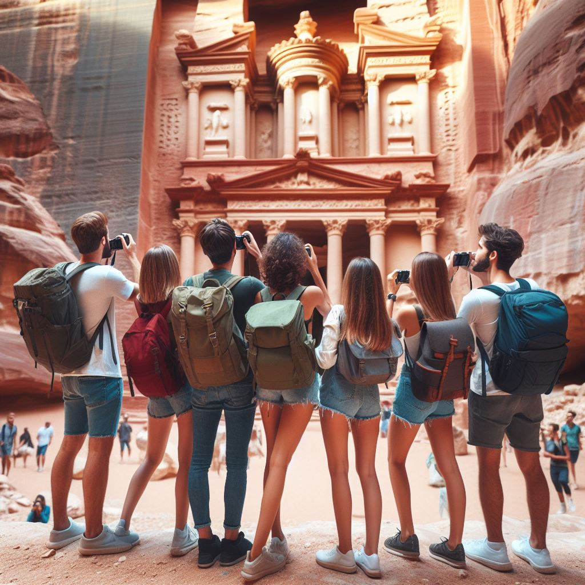
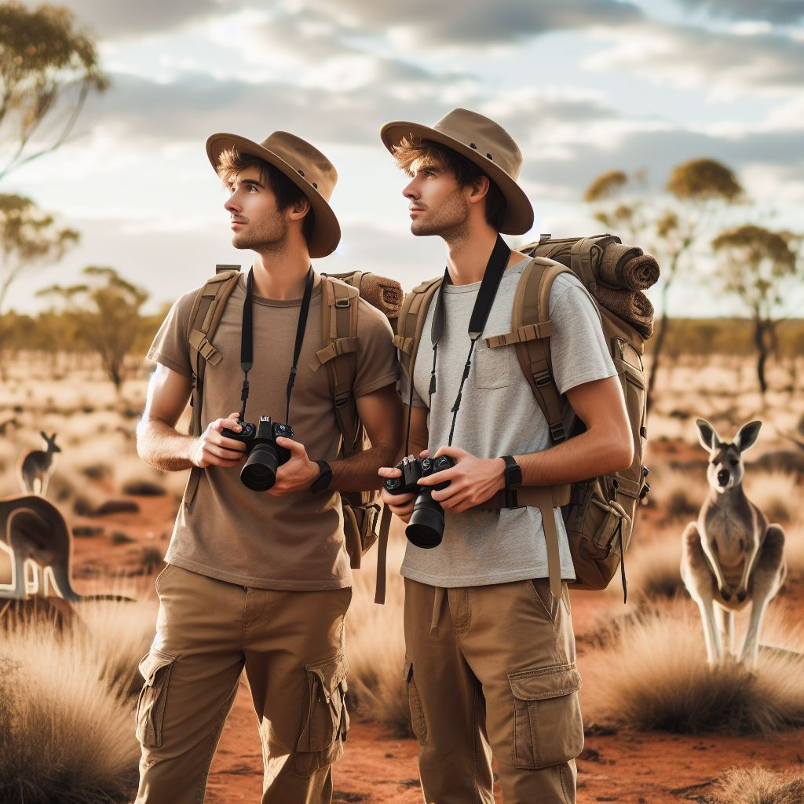
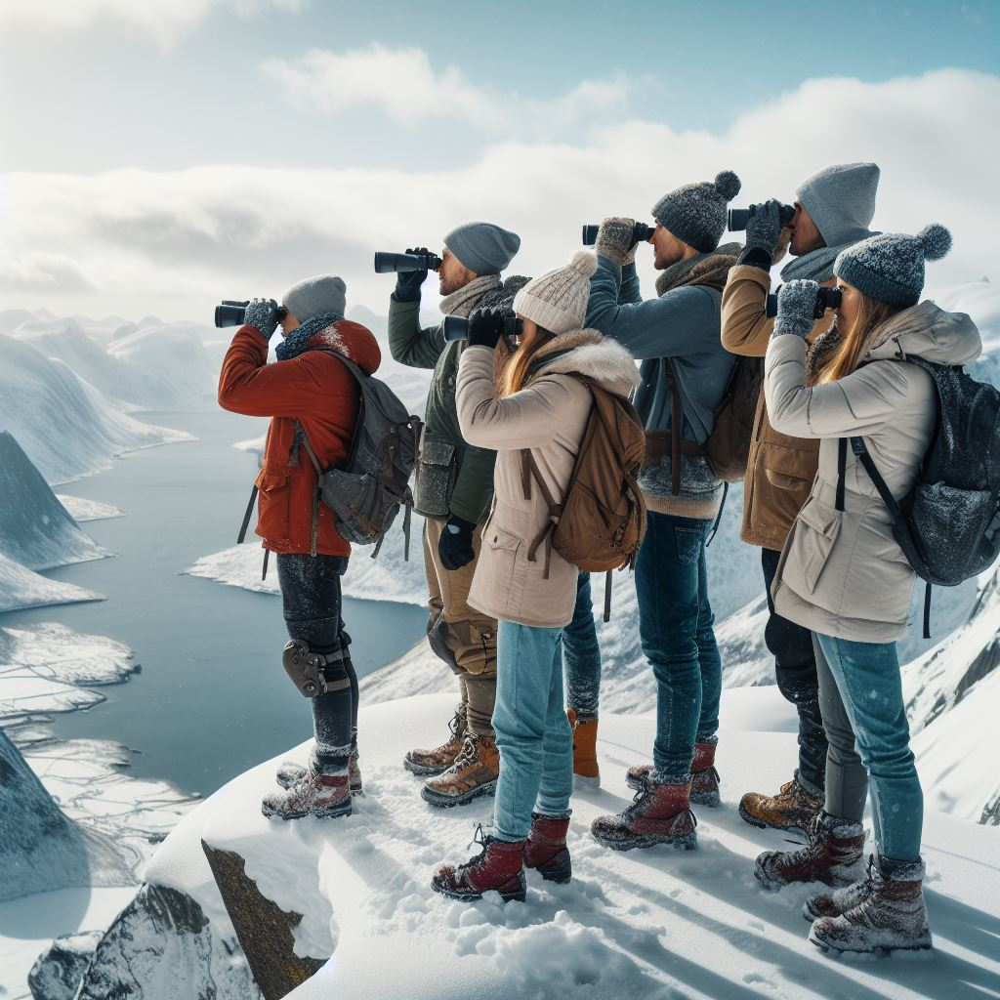
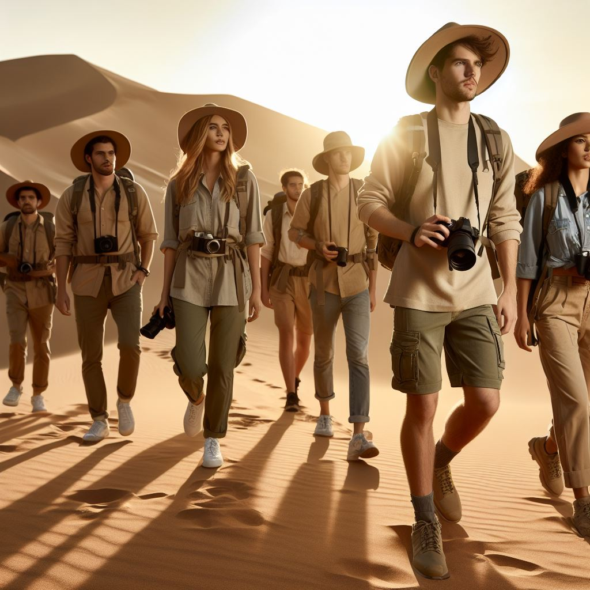
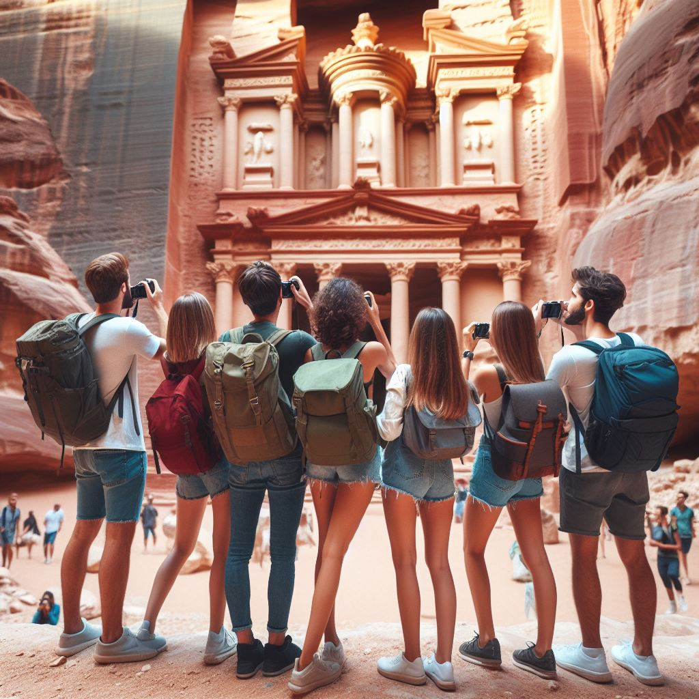
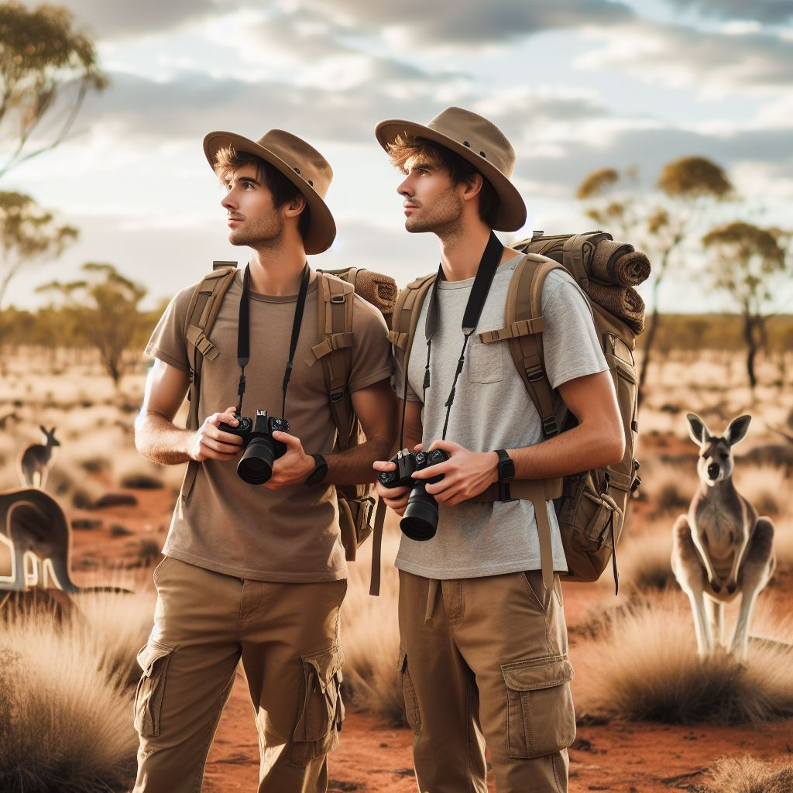
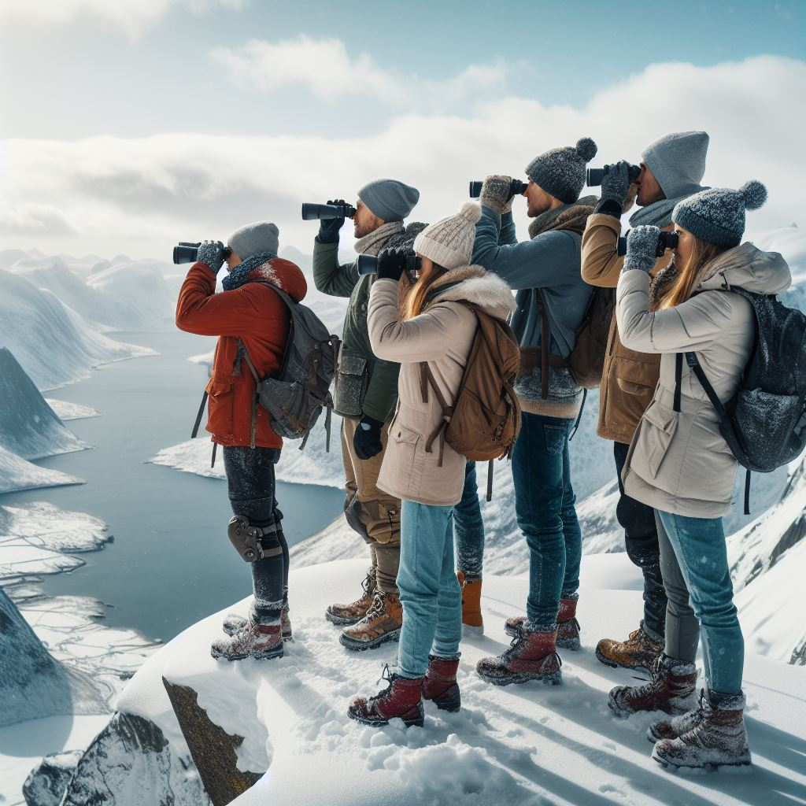
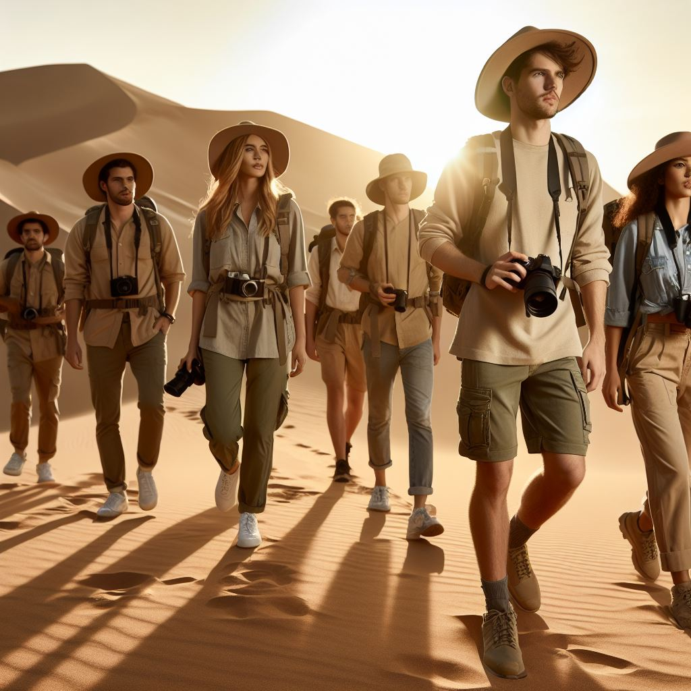

Descubre más sobre nosotros
Nuestra Misión
En Sendero Nómada, nuestra misión es ofrecer experiencias transformadoras a través de excursiones a destinos fascinantes y remotos. Nos comprometemos a conectar a las personas con la naturaleza, las culturas locales y consigo mismas, proporcionando aventuras inolvidables que enriquecen el alma y promueven un mayor entendimiento del mundo.
Nuestra visión
Nuestra visión es ser reconocidos como líderes en la industria del turismo de aventura, inspirando a viajeros de todas las edades y orígenes a explorar el mundo de una manera responsable y significativa. Aspiramos a ser una fuerza para el bien, promoviendo la conservación del medio ambiente y el respeto por las comunidades locales en cada destino que visitamos.
¡Acompañanos en nuestras aventuras!


 







ꕤ Nuestros objetivos ꕤ
ꕤ Ofrecer experiencias auténticas y únicas que superen las expectativas de nuestros clientes.
ꕤ Fomentar un turismo sostenible y ético, minimizando nuestro impacto ambiental y apoyando el desarrollo local.
ꕤ Promover la diversidad cultural y el intercambio intercultural en todas nuestras excursiones.
ꕤ Priorizar la seguridad y el bienestar de nuestros viajeros en todo momento.
ꕤ Inspirar y educar a nuestros clientes sobre la importancia de la conservación del medio ambiente.
ꕤ Nuestros Lideres de excursiones ꕤ
ꕤ Claire Redfield ꕤ

Es conocida por su coraje, determinación y habilidades de liderazgo excepcionales. Ha liderado numerosas expediciones, guiando equipos a través de terrenos desafiantes con facilidad. Su capacidad para formular estrategias y tomar decisiones rápidas le ha ganado el respeto y la admiración de sus colegas.
ꕤ Ruka Yoshida ꕤ
Es conocida por tener una trayectoria impresionante en el campo de la exploración, Ruka ha guiado a equipos a través de la selva amazónica y más. Su habilidad para motivar y liderar a su equipo, la han convertido en una líder de expediciones altamente respetada y amada.
ꕤ Xiaomao Lee ꕤ

Es conocida porque su liderazgo se basa en su habilidad para tomar decisiones rápidas y precisas, incluso en situaciones de alta presión. A pesar de su juventud, Xiaomao ha demostrado una y otra vez su valentia y determinación en el campo, lo que ha llevado a que sus compañeros le respeten y admiren profundamente.
ꕤ Juan Ponce de León ꕤ
Es conocido por su gran trayectoria en la exploración de nuevas tierras, Su espíritu aventurero y su valentía le gusta enfrentar desafíos en terrenos difíciles. Su historia y logros lo han convertido en un ejemplo a seguir para aquellos que buscan emprender aventuras y descubrir nuevas fronteras.
ꕤ Michael Smith ꕤ
Es conocido por su pasión por la naturaleza y su habilidad para conectarse con los miembros de su equipo lo han llevado a liderar exitosamente numerosas expediciones. Su nombre está asociado con la pasión por la naturaleza y su compromiso con el medio ambiente lo han convertido en un líder respetado y admirado.
ꕤ Yoo Gong ꕤ

Su enfoque centrado en el trabajo en equipo y la colaboración ha creado un ambiente de confianza y respeto entre sus compañeros, lo que ha llevado a establecer relaciones duraderas y a lograr resultados sobresalientes en cada una de sus aventuras, permitiendo a su equipo a alcanzar las metas propuestas en cada una de sus expediciones.